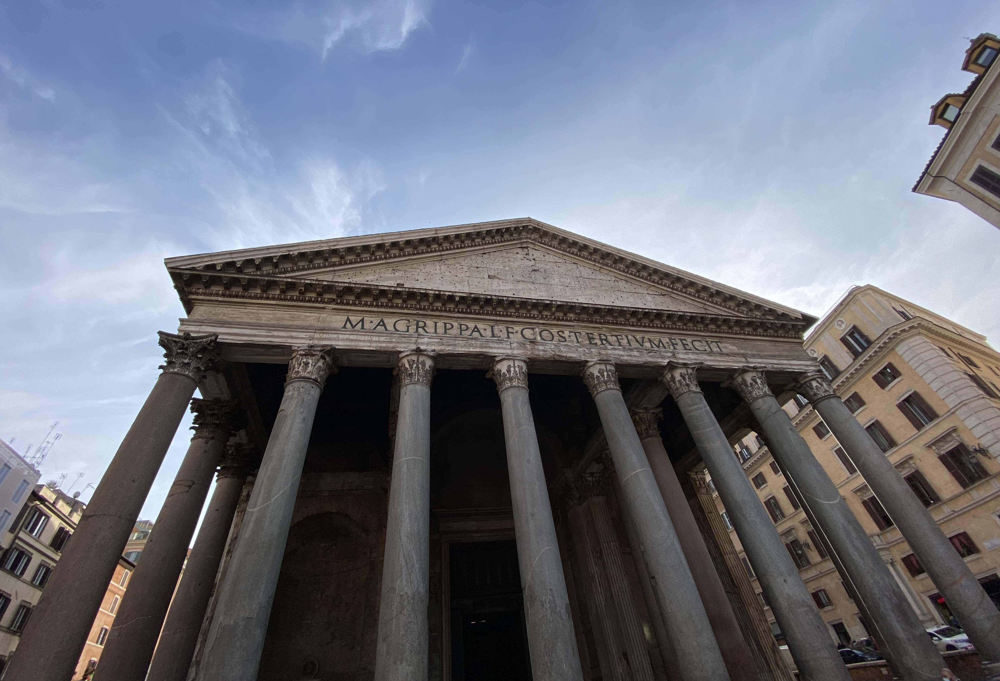

Řím říjen 2021

V červenci nám nevyšel Milán. V říjnu vyšel Řím.
Když jsme viděli, že rok 2021 nabízí možnost prodlouženého víkendu na konci října, říkali jsme si, že bychom toho mohli využít. Zvlášť po tom, co nám v červenci společnost Ryanair zrušila letenky do Milána a z naší plánované zahraniční dovolené tak rázem nebylo nic.
S letenkami do Říma to taky nebyla žádná sláva. Společnost nám je totiž ještě před odletem několikrát změnila. Nejdřív čas odletu a návratu, potom rovnou příletové letiště. S malou nejistotou, co nás ještě na cestě potká, i vlivem COVIDvých opatření, jsme se ale na den vzniku samostatného Československa vydali na cestu.
DEN 0
Byl čtvrtek po obědě, venku svítilo sluníčko a my se nalodili na palubu žlutého autobusu do Prahy. Cesta probíhala úplně v klidu. Nikde jsme nestáli. Já si nejdřív zdřímnul a potom jsem pročítal průvodce. Klára se dívala na film. Do Prahy jsme dorazili na čas. První část cesty proběhla bez problémů.
V hlavním městě nám všechny spoje skvěle navazovaly, takže jsme se až nezvykle rychle přesunuli na letiště. Druhá část cesty tedy byla na jedničku s hvězdičkou a já už si v tu chvíli začínal říkat, že s naším “štěstím” to začíná trošku smrdět. Ale nepředbíhejme. Na letišti nikdo nebyl, takže jsme prakticky hned prošli kontrolou a následně jsme si sedli do bageterie PAUL na večeři. Já jsem si dal quiche, Klára bagetu. Protože byla bageta velká a Klára měla strach, že mi quiche nebude stačit, dal jsem si i já nedobrovolně bagetu. Když se přiblížil čas odletu, v PAUL jsme to zabalili a přesunuli jsme se blíže k odletovým branám. A tam to přišlo. Místo ohlášení brány hlásič oznámil, že náš let bude mít hodinové zpoždění, což prakticky znamenalo, že bychom měli přiletět do Říma až kolem 23. hodiny. Nadšení jsme nebyli, ale nějak jsme to museli přežít. Vytáhli jsme proto počítač, zapnuli Netflix a dívali se na seriál Služka, takže nám čekání na letadlo relativně rychle uteklo.
Po ospalém letu jsme dorazili na hlavní římské letiště Fiumicino. Protože už bylo pozdě, neřešili jsme MHD, vzali jsme si taxi a jeli na hotel. Řidič na to docela šlapal, přejížděl z pruhu do pruhu, nedával blinkry, překračoval rychlostní limity a na můj vkus nedodržoval rozumné rozestupy. Pokud tedy byl někdo po nočním letu ospalý, myslím, že cesta do centra Říma ho zaručeně probrala.
Po příjezdu na hotel nás v rámci self check-inu čekalo pár úkolů, za které by se nemusela stydět žádná únikovka. Nejdřív jsme se museli dostat do budovy hotelu, která byla zamčená a my neměli klíč. Po tom, co jsem zhodnotil naše možnosti, jsem se rozhodl zazvonit na zvonek našeho hotelu. Hned první možnost vyšla. Vůbec nevím, jak se to stalo, ale rázem zazvonil bzučák a dveře se zázrakem otevřely. Po vystoupání do patra náš čekaly další zamčené dveře. K těm jsme už ale měli číselný kód, takže u nich se žádné drama nekonalo. Přišli jsme k recepci, kde jsme museli najít černou krabičku, ke které jsme měli další PIN. Po zadání číselné kombinace se krabička otevřela a v ní pro nás byly připraveny klíče od našeho pokoje. Nakonec tedy stačilo najít pokoj se jménem SMERALDO a jít dovnitř.
Před usnutím nás čekal ještě jeden poslední úkol - objednat snídani. Na stolečku jsme měli připravený lístek s možnostmi snídaňového menu. Abychom vytvořili objednávku, bylo nutné zaškrtnout, co bychom si rádi dali, poté lístek vyfotit a poslat na WhatsApp Silvii, majitelce hotelu.
Do postele jsme se dostali asi hodinu po půlnoci.
DEN 1
První den v Římě jsme vstali krátce před budíkem. V 8 hodin nám někdo zaklepal na dveře pokoje a přivezl snídani na stole na kolečkách. Na něm bylo vše, co jsme si den předem objednali. U mě se jednalo o obyčejného krocana, čokoládového krocana, jogurt a kávu.
Po snídani jsme vyrazili na prohlídku města. Ta začala v nejmenším státě na světě, tedy ve Vatikánu. Nejdříve jsme vyšplhali na kupoli Baziliky sv. Petra, kde jsme mohli obdivovat nejen Michelangelovy malby, ale také výhled na celý Řím. Když jsem byl v Římě před deseti lety poprvé (a do této dovolené naposledy), s Kubou a tetou jsme na kopuli nešli. I proto jsem se tam chtěl jít tentokrát podívat. A musím říct, že to opravdu stálo za to. Když si uvědomím, že stavební společnost, od které jsme před pár měsíci koupili byt, nedokázala ani postavit rovnou zeď a ve Vatikánu o několik stovek let dřív postavili tak monumentální stavbu, na které je dokonalý každý detail, nechce se mi tomu snad ani věřit.
Po prohlídce kopule, jsme se přesunuli do samotné baziliky. Mezi nejzajímavější artefakty, které je možné v interiéru baziliky spatřit na vlastní oči, patří bronzová socha sv. Petra, která už má od uctívajících věřících ohoblované prsty u nohou, a také hlavní oltář schovaný pod ikonickým bronzovým baldachýnem. Když jsme vyšli z baziliky, polovina náměstí byla uzavřená. Později jsme zjistili, že to bylo způsobeno summitem G20, který se o víkendu v Římě konal. Tento summit nám v dalších dnech zkomplikoval plány ještě několikrát.
My se ale nenechali odradit a pokračovali v prohlídce města k Andělskému hradu a poté dále do čtvrti Ponte. V ní jsme chvíli bloudili úzkými historickými uličkami, než jsme narazili na restauraci Cantina e Cucina, kde jsme se zastavili na oběd. Měli jsme hlad, takže jsme si dopřáli dvouchodové menu. Začali jsme degustačním talířem bruschettek (s rajčaty, šunkou a sýrem, sýrem a špenátem) a pokračovali hlavním chodem. Já jsem si vybral ravioli plněné sýrem a špenátem přelité rajčatovou omáčkou, Klára zvolila těstoviny cacio e pepe. Oběma nám moc chutnalo. Po obědě jsme zastavili ještě ve vedlejším podniku Two sizes. Jedná se o malou cukrárnu, která se specializuje na tiramisu, a podle svých slov je to nejlepší tiramisu v Římě. Člověk si může vybrat asi ze tří příchutí a může volit mezi dvěma velikostmi - odtud pravděpodobně název. Klára vyzkoušela malé karamelové tiramisu, já si dal velkou sicilskou cannolu.
Po obědě jsme se podívali na náměstí Piazza Navona, které má neobvyklý obloukový tvar a na kterém se nachází Fontána čtyř řek. Z něj jsme pokračovali sítí úzkých uliček k Pantheonu. Do chrámu se sice neplatí vstup, ale jako v celém Římě zaměstnanci kontrolovali COVID pasy a měřili teplotu. To způsobilo, že se na malém náměstí vytvořil dlouhý had lidí čekajících na vstup. Fronta byla sice dlouhá, ale postupovala docela rychle, takže jsme přibližně za 15 minut byli uvnitř. Tam jsme obdivovali díru ve stropu a já hledal hrob Rafaela.
Z Pantheonu jsme pokračovali k Fontáně di Trevi. Cestou jsme se ale malinko ztratili, takže jsme se zastavili na kávu v jedné z italských kaváren, kde jsme jsme doplnili síly a zjistili, jak se přesně k fontáně dostat. U jedné z nejikoničtějších staveb věčného města byl bambilion lidí, kteří před fontánou dělali různé pózy, aby tak vytvořili co nejlepší fotku na Instagram, nebo do fontány házeli mince, aby zaručili, že se do Říma ještě někdy v životě vrátí.
Množství lidí v Římě bylo obecně po celou dobu našeho pobytu obrovské. Moc nevím, čím to bylo. Tím, že je o víkendu volno a lidé z okolí Říma jedou do centra na výlet? Ideálními teplotami, při kterých člověku není zima, ale ani se nesmaží v betonovém pekle? Tím, že je po konci doby COVIDové obecně hlad po cestování, a tak lidé prostě cestují? Nebo tím, že byly v Česku podzimní prázdniny? Ač byl poslední bod myšlen s velkou nadsázkou, je pravda, že hlavně ráno ve Vatikánu jsem slyšel češtinu až nezvykle často. Chvílemi jsem si až říkal, že kombinace prodlouženého víkendu a levných letenek společnosti Ryanair možná z Říma učinila největší české město měsíce října 2021. Ať už byl ale důvod velkého počtu lidí v hlavním městě Itálie jakýkoliv, přiznávám bez mučení, že mě osobně to dost kazilo zážitky z naší dovolené.
Nedalo se ale nic dělat. Od přeplněné fontány di Trevi jsme pokračovali ke španělským schodům, mojí nejoblíbenější památce věčného města. Na nich jsme potkali velice milou paní ze Zlína žijící v Londýně, která přijela do Říma se svým mužem a dcerou. Sama od sebe se s námi dala do řeči a trošku vypadala, že rodný jazyk jí v Anglii chybí. Po rozloučení s anglicko-českou rodinou jsme si sedli k fontáně pod schody a chvíli jen tak chillovali.
Protože čas kvapil a my měli být v 18:30 ve vatikánských muzeích na prohlídce, nasedli jsme na metro a frčeli na hotel, kde jsme se nechali věci, které jsme do muzea brát nechtěli. Potom jsme se přesunuli do Vatikánu, vzali si mapu muzea a vydali se dvě hodiny dlouhou prohlídku. Nejzajímavější součástí expozice pro mě byla rozhodně Sixtinská kaple, ve které na Kláru jiná návštěvnice muzeí zavolala ochranku kvůli tomu, že porušovala zákaz focení, i když o tom nevěděla. Kromě Michelangelova slavného díla jsem zároveň obdivoval i točité schody od Giuseppa Moma, které se nacházejí u východu z muzeí.
Po prohlídce muzeí nám dost vyhládlo, takže jsme zašli na večeři do restaurace La Locanda di Pietro kousek od Vatikánu. Nejdříve jsme se s Klárou podělili o cuketové hranolky, poté jsme si dali pizzu. Klára si dala margaritu, já jsem si objednal pizzu na smetanovém základě s brambory a lanýži.
Po dlouhém dni jsme se přesunuli na hotel a šli spát.
DEN 2
Druhý den ráno jsme měli v plánu navštívit Koloseum. Abychom se vyhnuli davům turistů, chtěli jsme u něj být se začátkem otvírací doby. Vstali jsme proto v 8 hodin, dali si snídani a z hotelu vyrazili tak, abychom v 9:30 stáli před jedním z nových divů světa. Cesta trvala trošku déle, takže jsme do centra přijeli až kolem 9:45. I tak to ale bylo celkem jedno, protože jsme se před Koloseem dozvěděli, že je ten den zavřené kvůli summitu G20, a lístky jdou kvůli COVIDovým opatřením stejně koupit pouze online. Takže všechno špatně.
Abychom si alespoň trošku spravili chuť, prošli jsme se alespoň kolem Kolosea a potom pokračovali k další zastávce naší cesty, Lateránské bazilice. V ni jsme se podívali na sochy dvanácti apoštolů v nadživotní velikosti a ve vedlejší budově jsme se zastavili u svatých schodů, po kterých údajně Ježíš Kristus přicházel k Pilátovi na soud.
Následně jsme šli do restaurace Luzzi na oběd. Jedná se o restauraci, kterou jako jedinou v okolí Kolosea doporučuje k návštěvě náš knižní průvodce. To jsme ale zjistili až potom, co jsme ji navštívili. V restauraci jsme si dali zase bruschettu s rajčaty jako předkrm a poté těstoviny jako hlavní jídlo.
Po obědě jsme pokračovali k dalším dvěma kostelům, které byly ten den v plánu, k Santa Maria Maggiore a kostelu San Pietro in Vincoli. Druhý jmenovaný byl zavřený, takže jsme se dovnitř nedostali.
Po krátké zastávce na kávu a zákusek jsme seběhli od kostela San Pietro in Vincoli seběhli k Foru Romanu a navštívili ten den čtvrtý kostel, jehož jméno neznám. Do areálu Fora jsme se sice nedostali, ale zase tolik nás to nemrzelo, protože jsme si ho obešli ze všech stran, takže myslím, že vše důležité jsme viděli. Navíc si myslím, že se Kláře díky zapadajícímu sluníčku (a samozřejmě jejímu umu) podařilo udělat vynikající fotky.
Procházka kolem Fora nás zavedla až ke Kapitolským muzeí. Nejdříve jsme měli v plánu jejich návštěvu na poslední den, ale u pokladny nám řekli, že lístky na další den neprodávají, protože muzeum bude zase kvůli summitu G20 zavřené. Koupili jsme proto vstupenky a šli jsme do muzea rovnou. V něm se nachází několik sbírek obrazů a nepřeberné množství soch. Nejznámějším exponátem je pravděpodobně bronzová socha vlčice kojící Romula a Rema, symbol města Říma. Kromě toho je v muzeu i dlouhý venkovní balkon, ze kterého je nádherný výhled na sousední Forum Romanum. Muzeum bývá v průvodcích označováno jako jedno z méně oblíbených, ale mě přijde, že neprávem. Za návštěvu totiž určitě stálo.
Po prohlídce byl znovu čas večeře. V jedné z úzkých uliček kousek od Piazza Venezia jsme objevili restauraci Angelino, asi nejhorší restauraci, kterou jsme v rámci našeho pobytu navštívili. Místo vypadalo moc hezky, ale jídlo nám moc nechutnalo, bylo drahé a obsluha se k nám nechovala hezky.
Po večeři jsme se prošli nočním Římem zpět na hotel. Tím, že byla tma, podařilo se nám vidět hezky osvětlený Andělský hrad a Vatikán. Na hotel jsme dorazili kolem deváté hodiny. O další hodinu později už jsem usínal.
DEN 3
V pořadí třetí den v Římě začal sladkou hotelovou snídaní na pokoji, která zahrnovala krocany, jogurt a kávu.
Po snídani jsme se sbalili a vyrazili metrem na zastávku Piramide, kde se možná trošku nečekaně nachází pyramida. Jedná se o hrobku jednoho římského císaře, která je součástí dnes protestantského hřbitova. Na něm je mj. pochován i John Keats a jeho přítel Shelley. V den naší návštěvy byl Halloween, takže prohlídka byla i trošku tématická. Hřbitov ale moc halloweensky nepůsobil. Mezi starými náhrobky totiž rostly palmy a cypřiše a po hrobech se válely kočky. U známého hrobu se sochou plačícího anděla jsem někde pořád cítil kočičák. Myslím, že jsem ale do žádného nešlápl.
Ze hřbitova jsme šli podél řeky Tibery na Piazza Venezia. Na něm se nachází monumentální památník Viktora Emmanuela II., kterému Římané také přezdívají psací stroj, nebo umělé zuby. Klára jej překřtila na piano. Na památník se lze jít podívat a dle průvodců z něj má být pěkný výhled na Řím. I nás tento výhled zajímal, nicméně plány nám překazil již několikrát zmiňovaný summit G20. Kvůli němu bylo celé Piazza Venezia a okolí Kapitolu uzavřené, takže se žádná prohlídka nekonala.
Zašli jsme si proto na oběd do veganské restaurace Buddy, kde jsme ochutnali typická italská jídla ve veganském hávu. Naše obědové menu tvořily avokádovo-rajčatová bruschetta, pizza quattro formaggi a těstoviny amatriciana.
Odpoledne jsme se rozhodli projít ještě po centru a zajít se podívat do několika obchodů, např. do Lush, & other stories, nebo COS. Cestou jsme se zastavili ještě u některých památek (Pantheon, Španělské schody, Andělský hrad, Vatikán), dali si kávu a gelato. Na italské gelato s příchutí čokoláda a vanilka mi pan zmrzlinář dokonce nandal i kopeček šlehačky a vytvořil tím jednu z nejlepších zmrzlin v mém životě.
Procházku centrem jsme zakončili kolem 17:30 na hotelu, kde jsme nabrali trošku sil před dlouhým večerem a potom zašli na večeři. Na jídlo jsme se zastavili v restauraci La Soffitta kousek od hotelu. Já jsem si objednal těstoviny carbonara, Klára si dala gnocchi. Těstoviny carbonara jsem snad ještě v restauraci nikdy neměl, takže je nemůžu porovnat s jinými podniky. Musím ale uznat, že byly o dost lepší než ty, které dělám doma.
Po jídle jsme si stoupli na zastávku a čekali na příjezd autobusu, který nás měl odvézt ke Stadio Olimpico na fotbalový zápas mezi domácím AS Řím a AC Milán. Na zastávce sice čekalo hodně fanoušků, ale když autobus stále nepřijížděl, začínali jsme být s Klárou nervózní. Klára proto vytáhla mobil a začala hledat, zda jsou zpoždění u římské MHD obvyklá. Po chvíli našla, že MHD v Římě patří k jedné z nejhorší na světě. Nejenže jsou obvyklá zpoždění, ale provoz také ovlivňují časté stávky, takže se může stát, že prostředky MHD nejedou vůbec. To naštěstí nebyl náš případ. Po deseti minutách totiž autobus přijel. Do něj nastoupilo i několik příznivců AS Řím a já si myslel, že teď už bude cesta v klidu. Jenže to tak nebylo. Čekaly nás další tři zastávky a hned na té druhé stál obrovský zástup fanoušků, kteří netrpělivě vyhlíželi náš spoj. Když náš poloprázdný autobus přijížděl na zastávku, davy začaly zvenku bušit do oken a já tušil, že tohle nebude příjemné. Když se otevřely dveře, začal boj o místo v autobuse. Dav se vřítil dovnitř a zatlačil nás na okraj autobusu. Někteří se snažili ještě vejít do autobusu, i když už byl úplně plný, takže řidič zavíral dveře asi na pětkrát. Já osobně jsem byl přitlačen davem na okno v uličce naproti vstupním dveřím a na mě byl namáčknutý o hlavu menší Ital tak těsně, že jsem ho za dobu zbytku cesty poznal lépe, než bych si přál.
Po deseti minutách cesty jsme dorazili ke stadionu, prošli kontrolou a našli naše místa. Do začátku zápasu zbývalo asi 20 minut, při kterých se na stadionu pouštěli různé písničky. Některé v italštině, některé anglické. Hlavně ty italské potom fanoušci na stadionu dost hlasitě zpívali. Mně to připomínalo hudební koncert, na kterém hraje i předkapela, která má za úkol dostat fanoušky do varu a připravit je na hlavní hvězdu večera. A pokud byl záměr pořadatelů zápasu stejný, na mě to určitě zafungovalo.
Po písničkách přišlo představení rozhodčích. U každého jména celý stadion bučel a pískal. To stejné se dělo u oznámení sestavy hostujícího týmu. Naopak při představení domácí sestavy, každý fanoušek na stadionu ochotně řval jméno každého hráče, který se měl objevit ten den trávníku. Když byly známy sestavy, celý stadion vstal a zazpíval hymnu domácího týmu, Zvlášť při refrénu, ve kterém se zpívá “Roma Roma Roma”, mi běhal mráz po zádech.
Fanoušci byli obecně vynikající. Sice nároční, ale vynikající. Domácí se snažili povzbuzovat a na hosty a rozhodčího naopak vyvíjet tlak bučením a pískotem. Pokaždé, když se jim něco nelíbilo, vstali a začali hodně emotivně nadávat. Asi nejsilnější okamžik interakce mezi fanoušky a hráči na hřišti přišel v prvním poločase, kdy Zlatan Ibrahimovic z AC Milán zahrál přímý volný kop zpoza vápna a podařilo se mu vstřelit gól. Fanoušci začali pískat a kontroverzní Švéd na to reagoval tím, že se otočil ke kotli domácích, tzv. Curva Sud, a začal je gestem ještě pobízet. Zvednutýma rukama jim ukazoval něco ve smyslu “Jo, pískejte ještě víc”. A taky, že jo. Fanoušci i na naší relativně klidné tribuně se zvedli, začali pískat a nadávat. Najednou to byl celý stadion proti němu. A od vstřeleného gólu na něj fanoušci pískali při každém dotyku s míčem. Ibrahimovic si za svoje nesportovní chování vysloužil žlutou kartu.
Jinak byl ale při chuti. Po poločase, když domácí tlačili a snažili se vyrovnat, přišel break, při kterém Ibrahimovic dobíhal míč ve vápně a byl sestřelen domácím obráncem. Rozhodčí hned nařídil penaltu. Rozhodnutí si ještě ověřil u videa, ale svůj verdikt nezměnil. Franck Kessie s přehledem pokutový kop proměnil a muž zápasu ze Švédska vystřídal.
Následoval tlak domácích, spousta pádů a emocí. My s Klárou jsme odešli ze stadionu krátce po 80. minutě, abychom se vyhnuli davům fanoušků a dorazili na hotel v rozumnou hodinu, takže jsme neviděli gól domácích z kopačky Stephana El Shaarawyho, který v nastavení upravil skóre zápasu na konečný výsledek 1:2. Sestřih utkání je možné sledovat zde.
Zápas byl pro mě jedním z vrcholů celé dovolené. Sami jsme byli svědky skutečnosti, že římští fanoušci jsou jedněmi z nejvášnivějších v celé Evropě. Pokud pojedeme do Říma znovu, rozhodně bych na zápas domácího AS znovu zašel.
Na hotel jsme dorazili kolem 23. hodiny, osprchovali se a šli spát, abychom nabrali síly na zítřejší cestu.
DEN 4
Poslední den dovolené byl už pouze cestovní.
Vstali jsme v 6 hodin, sbalili se a zavolali si Uber, který nás zavezl na letiště. Zajímavé je, že Uber je v Římě o dost levnější než taxi, ale jeho kvalita na mnohem vyšší úrovni. V černém pětkovém BMW pro nás přijel řidiř Marco. Ten na sobě měl oblek a elegantní podzimní kabát. Celou dobu cesty jel podle předpisů, takže jsme neměli strach, že nedojedeme. Oproti cestě z letiště do centra města to byl znatelný rozdíl.
Kolem osmé hodiny jsme dorazili na malinké letiště Ciampino, kde jsme prakticky hned prošli kontrolou a dali si snídani. Čekání na let jsem si zkrátil nákupem suvenýrů.
Let probíhal naprosto v klidu. Klára spala, já psal tento článek. Na českou půdu jsme dosedli kolem 11. hodiny. Na letišti jsme vyplnili příjezdový formulář a jeli na oběd do naší oblíbené mexické restaurace Las Adelitas.
Ve 14 hodin jsme nasedli do žlutého autobusu, který nás odvezl do Brna. Tam náš říjnový prodloužený víkend skončil. Nicméně já už se nyní těším na další putování :-)